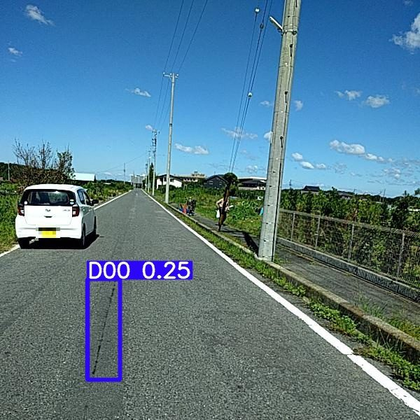
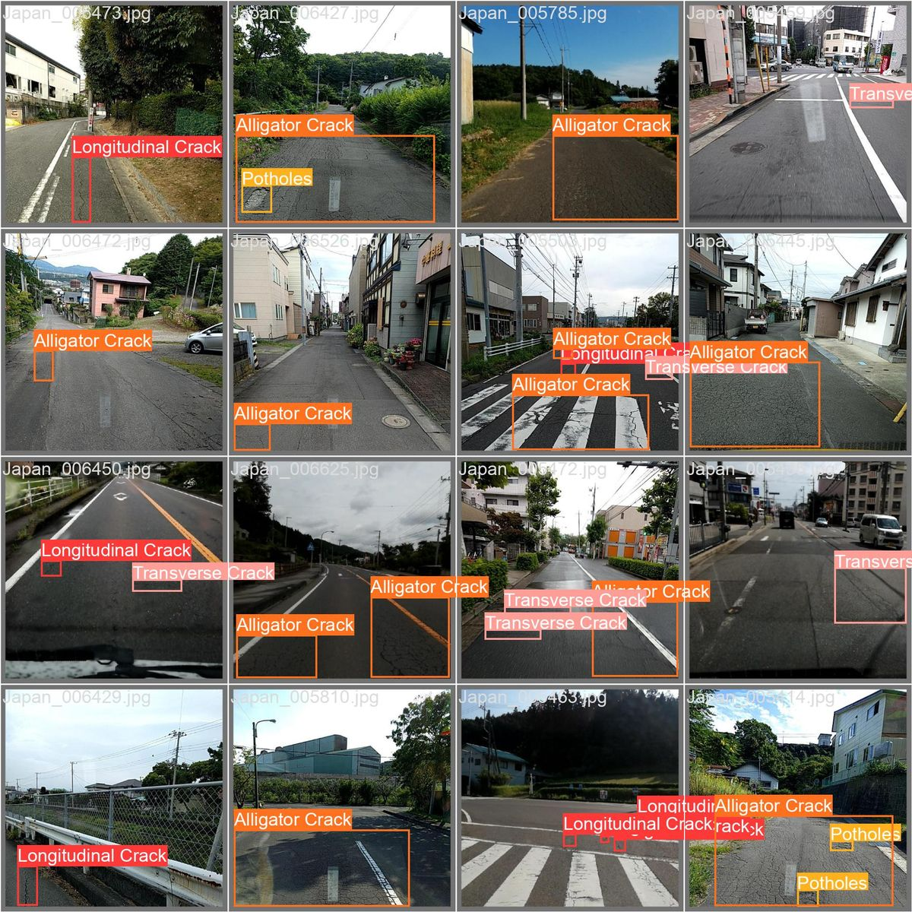
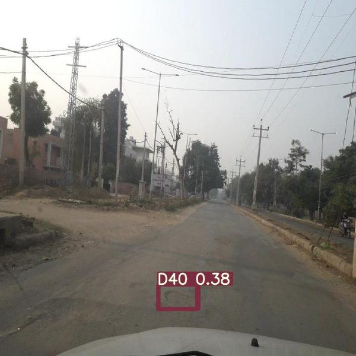
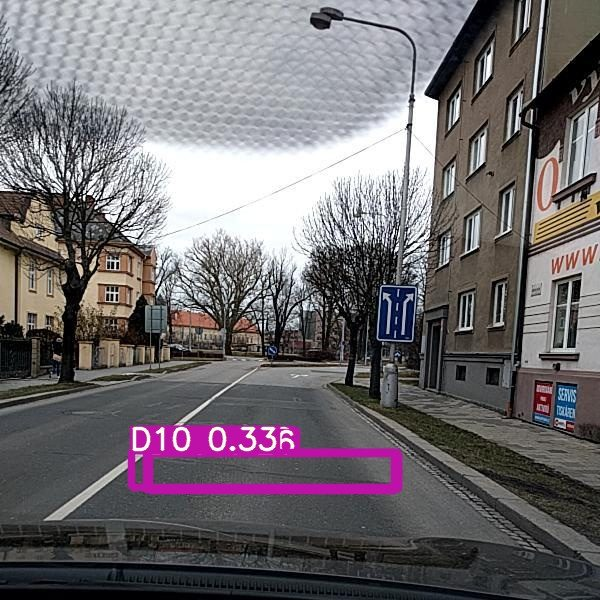
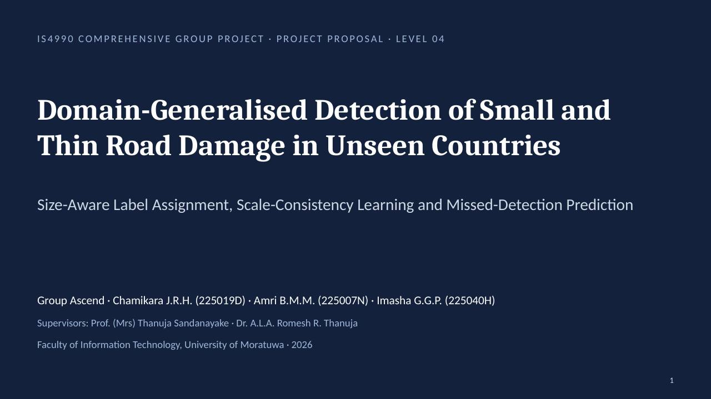

Finding small road damage in countries a detector has never seen
A road-damage detector trained in Japan or India loses much of its accuracy on another country’s roads, and hairline cracks may be the hardest to catch. We study three ways to help a YOLO11 detector on an unseen country, using no images from that country.
Detectors trained in one country stumble in the next
mAP@0.5 for a detector trained on Japanese roads and tested on Indian roads.
Lin et al., 2023, IEEE T-ITS (DA-RDD)mAP@0.5 for YOLOv8s trained in India and tested in South Africa.
Babawarun et al., 2025, Sustainabilitylarge public labelled road-damage datasets we could find for Sri Lanka, so a detector here would be trained on other countries’ images.
Our search, October 2026Cracks are often only a few pixels wide
In RDD2022, longitudinal and transverse cracks get tall, narrow or short, flat boxes, while alligator cracks and potholes get wide ones. Our three studies target the narrow ones.

Thin cracks go missing, and nothing says so
Roads look different
Pavement, markings, cameras, lighting and labelling styles change from country to country.
No local labels
A new country often has no labelled road images, so fine-tuning is not an option.
Thin damage is fragile
A crack a few pixels wide loses half its box overlap after a two-pixel error.
Misses are silent
A missed crack produces no box at all, so an inspector gets no warning.
One shared benchmark, three member studies
Every study uses the same folds, detector and rules. Each member changes one part of the pipeline and compares it with a matched alternative.
Hold one country out
Train on three RDD2022 countries; the fourth is never used for training or tuning.
Shared YOLO11 baseline
YOLO11s from COCO weights, 640 px, Ultralytics v8.4.192, the same for everyone.
Three changes
A changes how thin boxes are matched, B adds scale consistency, C predicts where damage was missed.
Score once
After a freeze, each held-out country is scored once, with seeds and a paired bootstrap.
Three questions, one per member
Does judging error relative to box thinness help?
Short-side-normalised NWD in YOLO11’s assigner against plain NWD. Measured by held-out mAP50:95.
Does scale agreement on small damage beat generic agreement?
Consistency only on small and thin boxes against the same loss on all boxes. Measured by held-out recall.
Can detector features show where damage was missed?
A 40 × 40 miss map from features plus weak detections against weak detections alone. Measured by AUPRC.
See it for yourself
Three ways to move a detector to a new country
They differ in what they need from the new country. Only source-only generalisation needs nothing, which matches a country with no collected data.
| Approach | Needs from the new country | Example |
|---|---|---|
| Fine-tuning | Labelled images | Babawarun et al., 2025 [2] |
| Unsupervised domain adaptation | Unlabelled images | DA-RDD, Lin et al., 2023 [7] |
| Source-only domain generalisation | Nothing | MAMDG, Chen et al., 2026 [3], which aligns features across source countries |
What exists, and what we add
Tiny-object distances
NWD measures tiny boxes more gently than IoU [10], and the task-aligned assigner picks which predictions learn from each box [5].
Our step: scale NWD by each box’s short side inside the assigner, and test it on an unseen road-damage country.
Consistency training
Agreement between views improves single-domain generalisation [4]; averaged teachers give stable targets [9].
Our step: enforce agreement across image scales only on small and thin damage, with no target images.
Failure prediction
Monitors have flagged missed traffic signs [8] and, in a 2026 preprint, missed persons in COCO images [11].
Our step: a cell-level map of missed road damage on a country the detector never saw.
To our knowledge, no published study has tested these three specific changes, with matched comparisons, on a road-damage country unseen in training and without its data.
Sources
- [1]Arya, D. et al. (2024). RDD2022: A multi-national image dataset for automatic road damage detection. Geoscience Data Journal. doi:10.1002/gdj3.260
- [2]Babawarun, T., Pandelani, T. & Ngwangwa, H. (2025). Transferability of measured data for YOLOv8s road-defect identification: an SA–Indian case study. Sustainability, 17(23), 10641.
- [3]Chen, Z. et al. (2026). Multi-adversarial metric-constrained domain generalization for road damage detection. Image and Vision Computing, 106173.
- [4]Danish, M. S. et al. (2024). Improving single domain-generalized object detection: a focus on diversification and alignment. CVPR.
- [5]Feng, C. et al. (2021). TOOD: Task-aligned one-stage object detection. ICCV, 3490–3499.
- [6]Jocher, G. & Qiu, J. (2024). Ultralytics YOLO11, release v8.4.192 used. github.com/ultralytics/ultralytics
- [7]Lin, C. et al. (2023). DA-RDD: Toward domain adaptive road damage detection across different countries. IEEE T-ITS, 24(3), 3091–3103.
- [8]Rahman, Q. M., Sünderhauf, N. & Dayoub, F. (2019). Did you miss the sign? A false negative alarm system for traffic sign detectors. IROS.
- [9]Tarvainen, A. & Valpola, H. (2017). Mean teachers are better role models. NeurIPS.
- [10]Wang, J. et al. (2021). A normalized Gaussian Wasserstein distance for tiny object detection. arXiv:2110.13389
- [11]Zimmermann, J. P., Holzbach, G. & Lerch, D. (2026). Knowledge-guided failure prediction (preprint). arXiv:2603.25499
Why a two-pixel error hurts a crack more than a pothole
During training, the assigner scores how well each prediction matches a labelled box. Change the box’s short side and the shift to compare three scores.
Solid: labelled box · Dashed: prediction shifted sideways. Long side fixed at 64 px.
IoU = (s − d) / (s + d) · NWD = exp(−W₂ / C) · ours = exp(−W₂ / (κ·s))
For two equal boxes offset by d, the Wasserstein distance W₂ equals d. Illustration uses C = 12 px and κ = 1; the real values are tuned per fold with equal effort for both rules.
The same crack, seen at two sizes
Cameras and mounting heights differ between countries, so the same crack appears at different sizes. B asks the model to agree with itself across scales, only on small and thin damage.
The teacher is a slowly averaged copy of the model. The student still trains normally at 640 px; the half-size view only adds an agreement loss.
- Change
- Consistency loss (class scores and box positions) on small and thin labelled boxes only.
- Compare
- The same loss on all boxes; secondary: on a random set of boxes of equal number.
- Measure
- Held-out recall of small or thin damage at a threshold chosen on source data.
- Guard
- False positives per image at most 10% above generic consistency.
A map of where damage was probably missed
A missed crack produces no box. The detector often half-sees it: its features react, or it guesses below the threshold. A small network reads those signs and marks a 40 × 40 grid.
Illustration only, not a result. Red cells mark likely missed small or thin damage; blue boxes are detections the detector did make.
- Inputs
- Frozen detector features (P3/P4) and a map of its low-confidence detections.
- Compare
- The same head trained on the low-confidence map only.
- Measure
- Cell-level AUPRC on the held-out country, with the share of positive cells.
- Limit
- Warnings flag areas for review; they do not recover the missed crack.
25,846 labelled images from four countries
RDD2022 has 47,420 road images from six countries, labelled with boxes for cracks and potholes. We use the four countries with labelled training images. Pick the held-out country for a fold.
What RDD2022 labels look like
Sixteen Japanese images with their ground-truth boxes. Notice how small and thin many crack boxes are next to the alligator-crack and pothole boxes.

Different countries, different roads
The 2020 challenge data inside RDD2022 come from Japan, India and the Czech Republic. Road surface, markings, roadside and camera position all change between them, which is why a detector trained in one country struggles in another.


These three boxes are predictions from a 2020 challenge model with its confidence scores, not ground truth. Images: Global Road Damage Detection Challenge 2020 data (part of RDD2022), CC BY-SA 4.0. Figures from USC-InfoLab/rddc2020 on GitHub.
What the boxes mean
Longitudinal crack
Runs along the road; often long and only a few pixels wide.
Transverse crack
Runs across the road; often short and thin.
Alligator crack
A network of connected cracks over an area.
Pothole
A bowl-shaped hole; usually a wide box.
Size definitions, fixed for every fold
- Small
- Box area under 32 × 32 px at the 640 px input size.
- Thin
- Box short side under 16 px at 640 px.
- Missed
- No prediction of the same class matches the box one-to-one at IoU ≥ 0.5, at a threshold chosen on source data only.
RDD2022 by Arya et al. (2024), released under CC BY-SA 4.0; the dataset photos on this page are shared under the same licence. No new photos are collected for this project. The road picture on the home page and the heat map on How it works are drawings, not results.
Fair by design, decided before any result
Fixed in advance
Comparisons, measures, size definitions and threshold rules are committed before any held-out result.
Equal effort
Each method and its comparison get the same data, training budget and tuning.
Sealed test countries
All development uses an inner validation country. The week-6 pilot measures the accuracy drop there; held-out countries are scored once, after a freeze.
Uncertainty reported
Three seeds for principal comparisons and a paired bootstrap over whole images. Results per country, as a mean and for the worst country.
What each study predicts
- H1
- The short-side rule gives higher held-out mAP50:95 than plain NWD, overall and for small or thin boxes.
- Method
- S = exp(−W₂ / (κ·s)) in YOLO11’s task-aligned assigner; changes both assignment and training weights.
- Compare
- Plain NWD, exp(−W₂ / C), with C tuned with equal effort.
- Explain
- Matches per box, unmatched boxes and training weight logged by box size.
- H2
- Focusing consistency on small and thin damage raises their held-out recall more than applying it to all boxes.
- Compare
- The same loss on all boxes; secondary: a random set of boxes of equal number.
- Guard
- False positives per image at most 10% above generic consistency.
- H3
- Adding detector features gives higher held-out AUPRC for missed small or thin damage than the weak-detection map alone.
- Labels
- From source slices the detector never trained on; separate slices for fitting and selection.
- Gate
- Week 8 label check; if unusable, switch to an image-level miss predictor.
Results are benchmark evidence on four countries. We make no claim about maintenance savings, road safety, or performance on Sri Lankan roads.
34 weeks from protocol to viva
Weeks count from the approved project start.
GPU time is the main risk
final detector trainings, plus 20–30 development runs.
assumed per ordinary run at 50 epochs; Member B’s two-view runs about 1.5 times that.
GPU-hours in total, to be measured in the week-6 pilot.
If the measured total exceeds the available time, cut in this order
Drop the combined A+B run.
Drop the one-seed control runs.
Reduce three seeds to two. No held-out country is dropped.
Resources
- NVIDIA GPUs with at least 12 GB memory, roughly 20–65 hours per week across the team, from the free Kaggle (about 30 hours per week per account) and Google Colab tiers.
- Personal computers with at least 16 GB RAM; about 100 GB storage for data, cached features and checkpoints.
- Python, PyTorch, Ultralytics v8.4.192, scikit-learn, FastAPI and React; Git and GitHub.
Who we are
Chamikara J.R.H.
Amri B.M.M.
Imasha G.G.P.
Prof. (Mrs) Thanuja Sandanayake
Dr. A.L.A. Romesh R. Thanuja
Faculty of Information Technology, University of Moratuwa
One study each, one shared baseline
Size-aware label assignment
Short-side-normalised NWD in YOLO11’s assigner.
Output: held-out mAP50:95, assignment logs by box size.
Scale-consistency learning
Teacher–student agreement across 640 and 320 px on small and thin damage.
Output: held-out recall with a false-positive guard.
Missed-detection prediction
A 40 × 40 miss map from frozen features and weak detections.
Output: cell-level AUPRC and the web demo’s heat map.
All three build the shared baseline together in weeks 4–6 and the prototype web application in weeks 28–30.
14 slides, 10 minutes

The submitted report
Domain-Generalised Detection of Small and Thin Road Damage in Unseen Countries: Size-Aware Label Assignment, Scale-Consistency Learning and Missed-Detection Prediction.